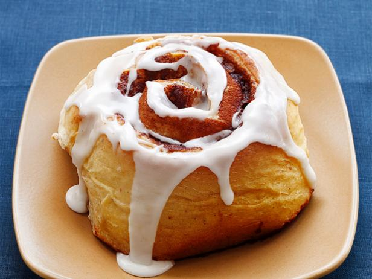

Cinnamon Buns

Description
Cinnamon-laced dough draped in white cream-cheese frosting.
Must be warm to be truly appreciated.
Recipe Credit goes to: Ambitious Kitchen
Ingredients
For the dough
- ¾ cup warm milk (whole milk or 2% preferred) (110 degrees F)
- 2 ¼ teaspoons quick rise or active yeast (1/4-ounce package yeast)
- ¼ cup granulated sugar
- 1 egg plus 1 egg yolk, at room temperature
- ¼ cup unsalted butter, melted
- 3 cups bread flour, plus more for dusting
- 3/4 teaspoon salt
For the filling
- 2/3 cup dark brown sugar (light brown sugar also works)
- 1 ½ tablespoons ground cinnamon
- ¼ cup unsalted butter, softened
For the cream cheese frosting
- 4 oz cream cheese, softened
- 3 tablespoons unsalted butter, softened
- ¾ cup powdered sugar
- ½ teaspoon vanilla extract
Steps
- Warm milk to around 110 degrees F. I like to do this by placing milk in a microwave safe bowl and
microwaving it for 40-45 seconds. It should be like warm bath water. Transfer warm milk to the bowl of an
electric mixer and sprinkle yeast on top. Add in sugar, egg, egg yolk and melted butter. Mix until well
combined. Next stir in flour and salt with a wooden spoon until a dough begins to form.
- Place dough hook on stand mixer and knead dough on medium speed for 8 minutes. Dough should form into a nice
ball and be slightly sticky. If it's TOO sticky (meaning it's sticking to the bottom of the mixer, add in 2
tablespoons more bread flour.) If you don’t want to use an electric mixer, you can use your hands to knead
the dough for 8-10 minutes on a well-floured surface.
- Transfer dough ball to a well-oiled bowl, cover with plastic wrap and a warm towel. Allow dough to rise for
1 hour to 1 ½ hours, or until doubled in size. This may more or less time depending the humidity and
temperature in your home.
- After dough has doubled in size, transfer dough to a well-floured surface and roll out into a 14x9 inch
rectangle. Spread softened butter over dough, leaving a ¼ inch margin at the far side of the dough.
- In a small bowl, mix together brown sugar and cinnamon. Use your hands to sprinkle mixture over the buttered
dough, then rub the brown sugar mixture into the butter.
- Tightly roll dough up, starting from the 9-inch side and place seam side down making sure to seal the edges
of the dough as best you can. You will probably need to cut off about an inch off the ends of the dough as
the ends won’t be as full of cinnamon sugar as we’d want it to be.
- Cut into 1 inch sections with a serrated knife or floss. You should get 9 large pieces.
- Place cinnamon rolls in a greased 9x9 inch baking pan or round 9 inch cake pan. (I also recommend lining the
pan with parchment paper as well, in case any of the filling ends up leaking out.) Cover with plastic wrap
and a warm towel and let rise again for 30-45 minutes.
- Preheat oven to 350 degrees F. Remove plastic wrap and towel and bake cinnamon rolls for 20-25 minutes or
until just slightly golden brown on the edges. You want to underbake them a little so they stay soft in the
middle, that’s why we want them just slightly golden brown. Allow them to cool for 5-10 minutes before
frosting. Makes 9 cinnamon rolls.
- To make the frosting: In the bowl of an electric mixer, combine cream cheese, butter, powdered sugar and
vanilla extract. Beat until smooth and fluffy. Spread over cinnamon rolls and serve immediately. Enjoy!
Return Home